Architecture & Internals
Data Flow: Directory Selection to Sorting Plan
The system relies on an automated, pipelined data flow from the moment the user selects a directory to the generation of the final sorting plan.
1. Data Extraction
When a directory is selected, build_corpus_generator scans and extracts text from supported files (PDFs, DOCX, CSV, Excel, TXT).
2. ML Clustering & Recursive Analysis
See IncrementalAnalyzer for details on the core incremental ingestion logic.
See RecursiveKMeansStrategy for details on the hierarchical clustering approach used for deep folder structures.
3. Folder Naming Logic
Folder names are generated dynamically using NMF components. The folder naming logic selects the top 2 terms for each topic and concatenates them with a hyphen (e.g., Finance-Money). Words are capitalized based on a TF-IDF vectorizer of the cluster documents.
Asyncio Concurrency & UI Responsiveness
The application features a responsive user interface powered by an asyncio event loop and leverages thread pool offloading to ensure non-blocking UI interactions during heavy file I/O and machine learning operations.
- Async Event Loop & Non-Blocking Scheduling: Long-running background operations, such as initial directory processing (
_scan_and_process_worker), are scheduled on the activeasyncioevent loop usingasyncio.create_task. - Thread Pool Offloading (
asyncio.to_thread): Blocking file system scanning (get_files_recursively), document metadata extraction (MetadataPass.run), incremental ML fitting (partial_fit), and sorting plan calculation (generate_sorting_plan) are delegated to worker threads viaasyncio.to_threadto keep the UI event loop unblocked. - Debounced Plan Recalculation: User actions that require plan updates (such as file drag-and-drop moves or node lock toggles) trigger
_rebuild_plan_async. Recalculation is debounced by 0.5 seconds usingasyncio.sleep(0.5)wrapped inside a_debounce_task. Rapid user interactions cancel any existing pending debounce task (_debounce_task.cancel()) to prevent redundant plan recalculations. - Cooperative Token Cancellation (
threading.Event): Plan recalculations utilize isolatedthreading.Eventcancellation tokens (_current_recalc_token). The offloaded thread regularly evaluates acheck_cancelcallback (lambda: token.is_set()). If the token is set or ifasyncio.sleepraisesasyncio.CancelledError, background execution aborts immediately, preventing wasteful CPU and RAM consumption. - Thread-Safe UI Dispatch: Thread worker progress callbacks dispatch UI component updates back to the primary asyncio event loop using
loop.call_soon_threadsafe.
Background Processing & Debouncing Sequence Flow

Directory Watchdog Monitoring State Machine
Centralized System Utilities & Architectural Guardrails
To prevent redundant patterns, platform-specific path bugs, and visual/functional defects across application scopes, we consolidate all system packaging checks, path character validations, and database directory setups / encryption key lookups.
Centralized Core Helpers
All shared system utilities must reside in or be exposed through app.core.path_utils. Direct usage of custom platform or frozen bundle hacks is strictly prohibited.
* Packaging and Bundle Detections: The unified helper is_packaged() in app.core.path_utils checks sys.frozen to detect if the app is running in a PyInstaller frozen bundle.
* Path Sanitization & Name Validation: Standard validations such as validate_target_path(), sanitize_name(), and is_valid_name() standardize path checking across the application, adhering to OS limits and avoiding platform-specific path errors.
* Quarantine Target Path & Boundary Validation: QuarantineInterceptorService.resolve_safe_target_dir() verifies target output subfolders using validate_target_path() and enforces strict boundary containment within base directory boundaries via is_subpath_or_equal(), safely falling back to default subfolders if path traversal or illegal characters are detected.
* Session and Data Directory Resolution: Session setup is centralized in setup_session_directory() and encryption key lookup is handled via resolve_db_crypto().
* Centralized Cryptographic & Key Management Facade: Cryptographic key derivation (SHA-256 with legacy MD5 migration), envelope encryption for proxy settings, and ephemeral bootstrap keys are managed by CryptoManager (app.core.crypto).
* Unified Secret Scrubbing Delegate: All secret scrubbing and diagnostic credential masking delegates to sanitize_secret_patterns() in app.core.text_utils, eliminating duplicate regex definitions across logging and text filtering.
Automated Commit-Stage Linting
The automated validation script scripts/validate_duplicates.py is configured as a pre-commit hook to parse Python files and reject any attempts to re-introduce hardcoded path characters (e.g., <>:"|?*), direct sys.frozen checks, or raw secret.key references outside of path_utils.py. This keeps pre-commit validation times extremely low (typically < 0.5s) while enforcing strong guardrails against duplicate utilities.
Modular CLI Subcommand Registry
The command-line interface is organized modularly under app/cli/, delegating domain subcommands to dedicated handlers registered via build_subparser_registry in app/cli/__init__.py:
ledger(app/cli/ledger_cli.py): Transaction ledger status (status), automated operation recovery (reconcile), and record cleanup (purge).quarantine(app/cli/quarantine_cli.py): Quarantine staging inspection (list,inspect), forensic scanning (process), and document release (release).
All subcommands enforce stream isolation (sys.stdout reserved for structured output/JSON; sys.stderr for logs and progress), support --json, --quiet, and --no-color global wrappers, and execute database connection cleanup in finally blocks to release file descriptor locks across all target platforms.
Dual-Barrier Sensitivity Compliance System
Sortify enforces defense-in-depth protection for sensitive documents (e.g. medical, financial, legal, PII) across both staging and physical execution phases.
1. Upstream Staging Barrier (Phase 0)
The QuarantineInterceptorService integrates with JevClassifierEngine during Phase 0 triage. Any document assigned a sensitive rating (matching AUTO_QUARANTINE_RATINGS, such as CRITICAL or HIGH) is immediately transitioned to QUARANTINED status with policy action sensitivity_hold and logged in quarantine_records. The ContinuousWatchdogDaemon recognizes sensitivity_hold as terminal, halting fast-path plan generation or Phase 2 slow-path classification.
2. Downstream Execution Barrier (Physical Moves)
During plan move execution in AsyncMoveEngine, plan node sensitivity metadata (sensitivity_rating, sensitivity_score) recorded by FileAnalyzer is evaluated prior to physical move execution. If a plan node contains a sensitive rating matching AUTO_QUARANTINE_RATINGS, standard folder movement is blocked and the file is safely redirected to the compliance quarantine directory (_Compliance_Quarantine or configured QUARANTINE_DIR_NAME) with audit logging recorded in quarantine_records.